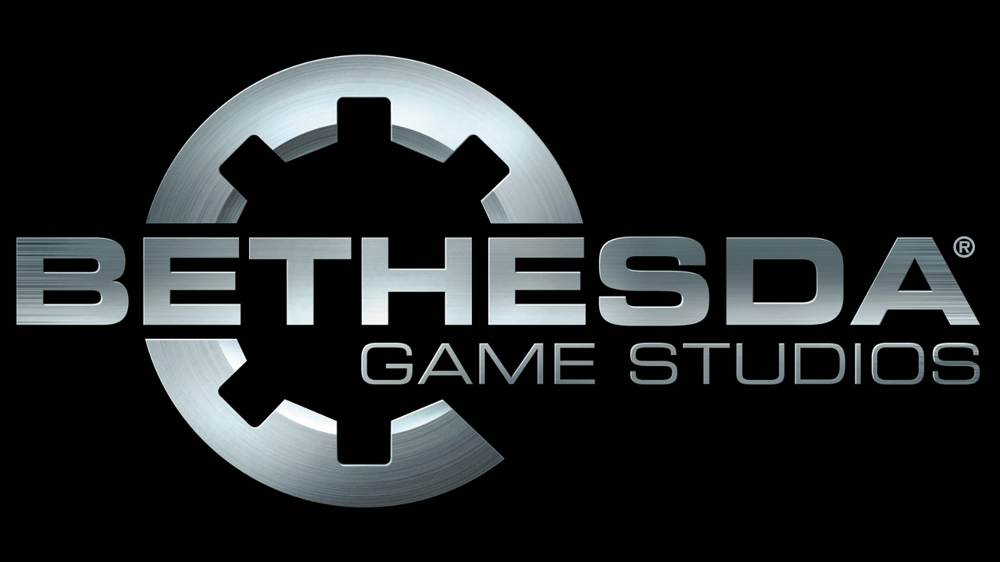
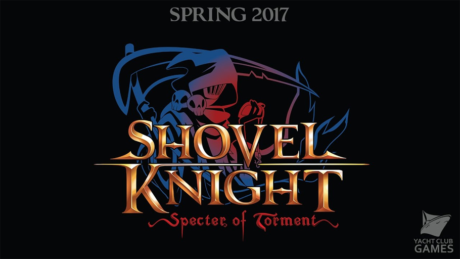

Bethesda celebrará su conferencia en el E3 2017 el 11 de junio
Bethesda acaba de confirmar en Twitter la celebración de su conferencia en el E3 2017. No hay grandes datos aún, pero sí
se ha dado a conocer que se celebrará el domingo 11 de junio por la tarde, por lo que Microsoft y la editora de Fallout 4 o
The Elder Scrolls V: Skyrim compartirán el mismo día en tierras americanas.
Bethesda lleva celebrando conferencia desde el año 2015: en la edición pasada se desveló el nuevo Prey.
¿Puede ser el año del nuevo Wolfenstein? Tendremos que esperar hasta junio.

¡Nuestros ANTIHÉROES favoritos del videojuego!
Estos son los 10 anti-héroes favoritos de los videojuegos.
Una decena de personajes inolvidables con los que nos hemos sentido mal… haciendo el bien.
Take Two llevará al cine algunas de sus grandes franquicias
En el último informe financiero de Take Two, con resultados muy positivos para la compañía, su máximo responsable
confirmó que algunas de sus grandes franquicias llegarán al cine en el futuro, sin ofrecer muchos más detalles sobre esta cuestión.
"Hemos licenciado un par de títulos para la producción de películas y no tenemos mucho más que decir en estos momentos", ha declarado
Strauss Zelnick. Sí deja claro que la compañía no invertirá ni un céntimo en estos films y, por encima de todo, mantendrá el control
creativo de las obras que lleguen al cine o la televisión.
"Si otra gente quiere licenciar nuestras franquicias y podemos mantener el control creativo, seremos comprensivos",
comenta el directivo, que no tiene muy buena opinión de otras sagas de videojuegos que han dado el salto a la gran pantalla.
"El historial de películas basadas en videojuegos es, en el mejor de los casos, irregular".
Algunas de las licencias de Take Two que podrían terminar llegando al cine o la TV son Grand Theft Auto, Borderlands,
Mafia o Red Dead entre otras.
Shovel Knight Specter of Torment ¡ya está terminado!
El equipo de Yacht Club Games ha anunciado que Specter of Torment, la nueva expansión de contenidos de su genial
Shovel Knight, ya está terminada y lista para estrenarse en las tiendas de todo el mundo, ¡eso sí!, en una fecha aún por concretar.
Lo único claro es que Shovel Knight: Specter of Torment, que añade nuevos escenarios y nos pone a los mandos de uno de los enemigos
principales del videojuego original, se lanzará primero en Nintendo Switch, incluido en Shovel Knight: Treasure Trove, la versión especial
creada por Yacht Club Games para la consola de Nintendo y ya, en el mes de abril, desembarcará en el resto de plataformas.
Os recordamos que aquellos que ya tengan en su poder el fantástico Shovel Knight recibirán esta expansión sin coste adicional;
en caso contrario, se puede adquirir la edición Treasure Trove, que incluye el original junto a sus dos expansiones.

La beta de Injustice 2 llega a su fin el 21 de febrero
¿Eres uno de los afortunados con acceso a la beta cerrada de Injustice 2? Disfruta de la experiencia pues el próximo 21 de
febrero llega a su fin esta fase de pruebas que, en palabras del equipo de NetherRealm, les ayudará a mejorar el videojuego y su
infraestructura online de cara a su lanzamiento en el mes de mayo.
"Gracias a todos nuestros jugadores que han participado en la beta online de Injustice 2", reza el comunicado oficial. "Recibimos
una gran cantidad de datos que ayudarán a que el estreno de nuestros modos online sea el mejor posible. Ahora es el momento de ponernos
a trabajar e implementar estos cambios".
Hasta ahora, el nuevo videojuego de lucha de los responsables de Mortal Kombat ha confirmado la presencia de personajes de DC
Comics como La Cosa del Pantano, Superman, Batman, Catwoman, Atrocitus, Flash, Harley Quinn, Wonder Woman, Deadshot, Gorilla Grodd,
Aquaman, Robin o Blue Beetle entre otros.